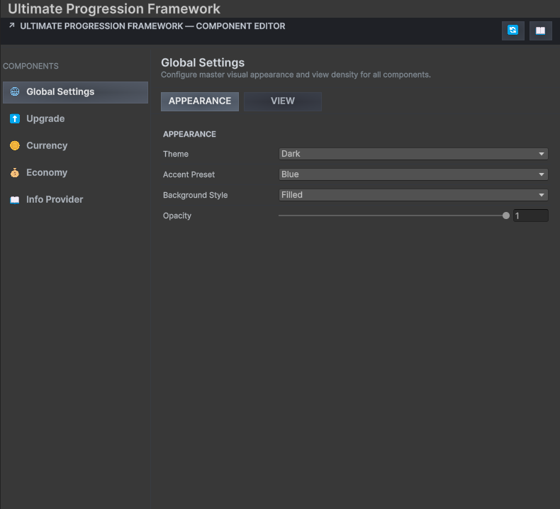
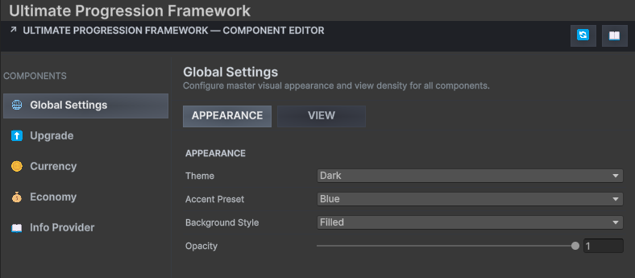
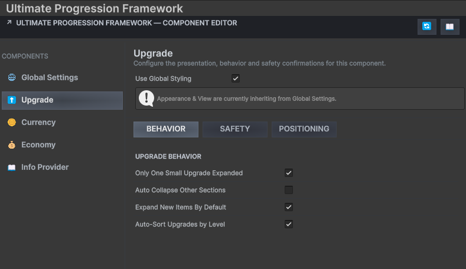
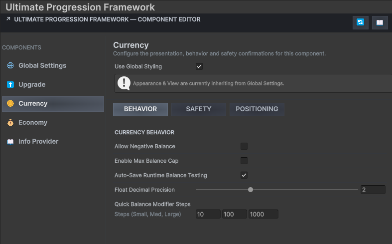
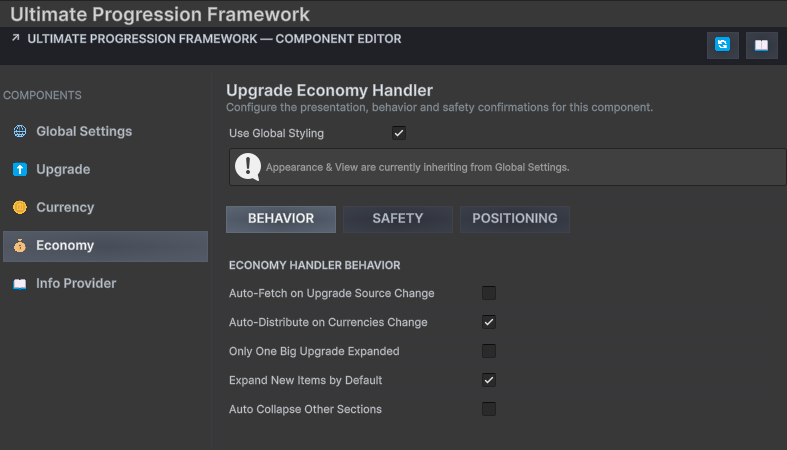
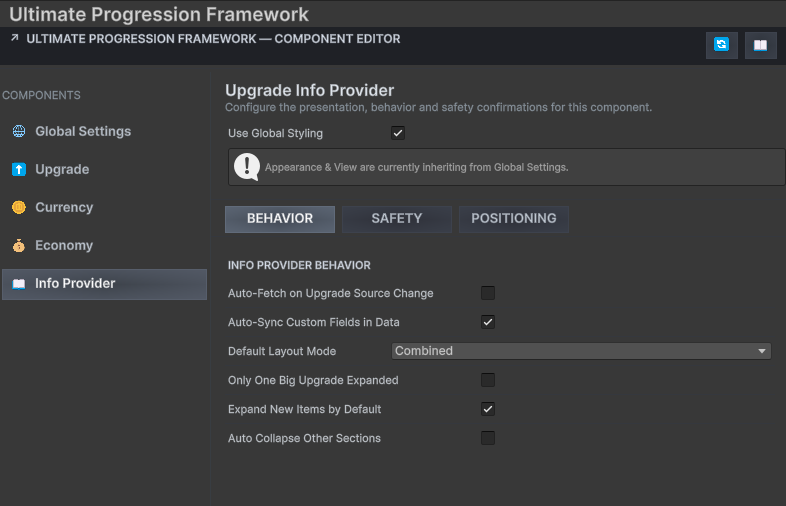

Documentation
Editor & Workflows
Framework Settings

Framework Settings Overview
images/settings/framework-settings-overview.png
Recommended: 1400 × 1800 PNG
Framework Settings keeps package-wide and component-specific Editor preferences in one place.
Settings section 1. Global Settings Controls shared Inspector behavior, confirmations and framework-wide authoring preferences.

Global Settings
images/settings/global-settings.png
Recommended: 1400px wide PNG
Global Settings establishes consistent behavior across the UPFS Editor experience.
Tip · Team consistency
Agree on settings that alter automatic behavior before several team members begin authoring shared progression assets.
Settings section 2. Upgrade Settings Configures Upgrade Inspector conveniences, generation behavior and development safeguards.

Upgrade Settings
images/settings/upgrade-settings.png
Recommended: 1400px wide PNG
Upgrade preferences shape the main progression-authoring workflow.
Settings section 3. Currency Settings Controls Currency SO Inspector and persistence-development preferences.

Currency Settings
images/settings/currency-settings.png
Recommended: 1400px wide PNG
Currency preferences support predictable balance editing and testing.
Settings section 4. Economy Settings Configures Economy Handler fetching, data distribution and synchronization behavior.

Economy Settings
images/settings/economy-settings.png
Recommended: 1400px wide PNG
Economy preferences determine how aggressively generated cost data follows Upgrade source edits.
Warning · Automatic fetches can replace generated output
When enabling automatic synchronization, verify custom cost edits after structural changes to the source Upgrade.
Settings section 5. Info Provider Settings Controls Info Provider synchronization and custom metadata authoring behavior.

Info Provider Settings
images/settings/info-provider-settings.png
Recommended: 1400px wide PNG
Info Provider preferences support safe synchronization of presentation metadata.